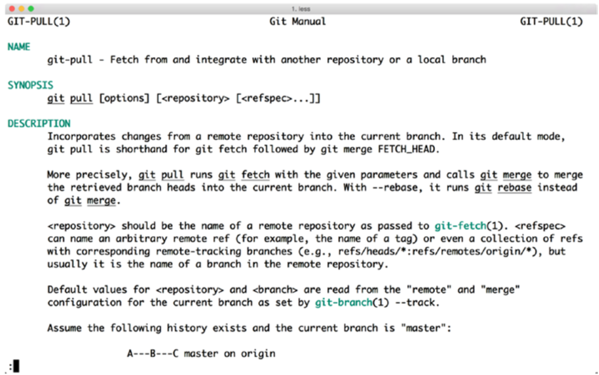
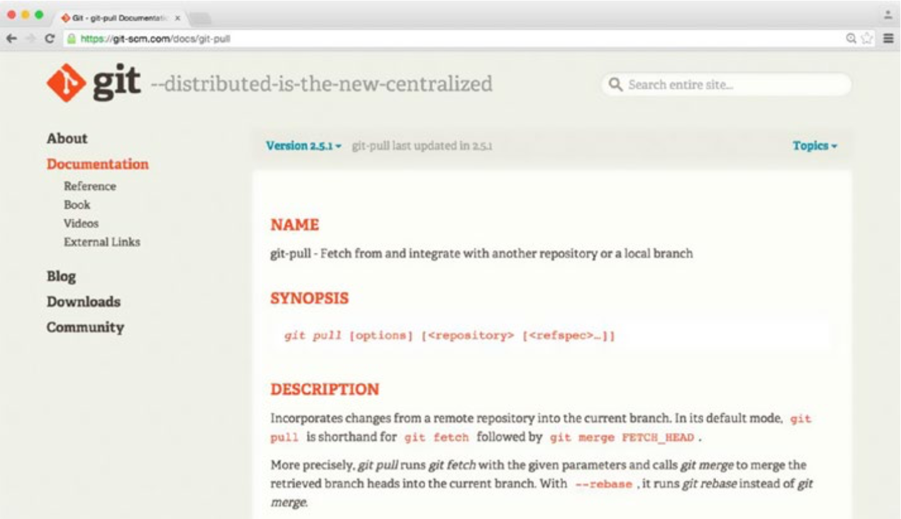
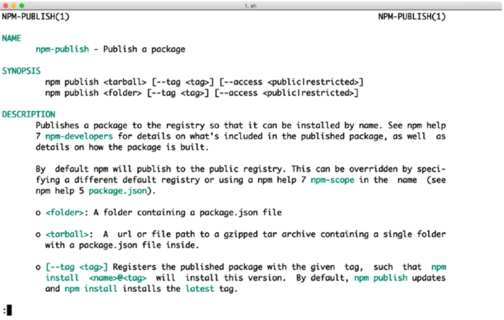
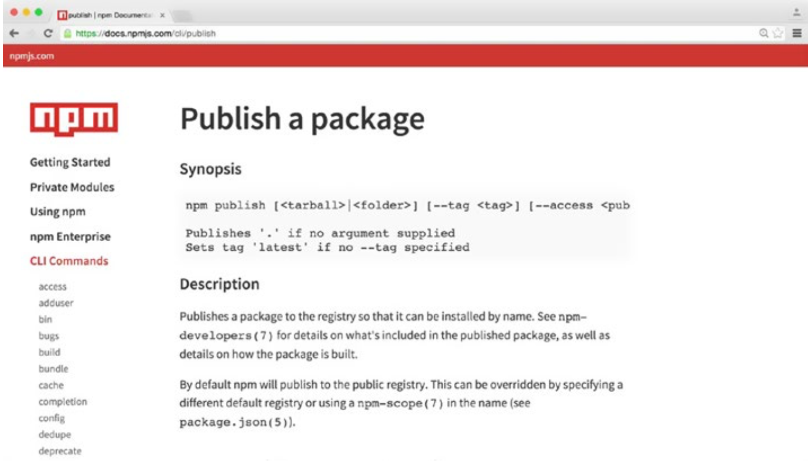

《The CLI Book》 第一章 什么是一个好的CLI？
在本章中，您将看到成功的命令行客户端以及他们的表现如何。这将帮助您理解用户面临的问题，从而帮助您在本书后面的Node.js中构建更好的命令行客户端。
CLI基础
我们先来看看用户通常如何使用命令行接口（CLI，Command-Line Interface）。大多数时候，用户坐在键盘前面并与终端进行交互。 您应该为 CLI 使用简单且可识别的命令。但令人遗憾的是，只是使用容易识别的命令不会让您足够用。
如果您查看一个错误的CLI，问题会更容易理解：
$ my-example-cli -A -a 16 r foo.html
error: undefined is not a function
在这个例子中，你必须输入神秘的命令，然后通过一个神秘的错误信息来回答。你可能会问：“Whatdoes-A -a 16 r是什么意思？”和“为什么我得到一个错误，我用错了吗？”和“错误是什么意思，我怎样才能完成我的任务？”
那么，什么使得一个好的CLI？ 简而言之，成功的CLI是使用户成功和快乐的一种。
我们尝试使用以下三个原则创建CLI：
•您永远不会陷入CLI中。
•它很简单，并支持高级用户。
•你可以用它来做很多事情。
你永远不会陷入困境
没有人喜欢堵车，每分钟只移动几英尺。 您想以最快，最舒适的方式到达目标目的地。 这同样适用于你的用户：当工具站在他们的路上时，他们变得非常不高兴。 他们只是想完成任务。
永远不要被卡住，意味着你应该始终为用户提供解决任务的方法。一个命令不应该是死路一条。另外，你应该避免你的命令行工具中的每一个摩擦源。
为了更好地说明这一点，我们来看看Git和npm--两个非常成功的命令行工具。
以下是使用Git的示例：
$ git poll
git: 'poll' is not a git command. See 'git --help'.
Did you mean this?
pull
在这个例子中，我输入了错误的命令，poll，而不是pull。幸运的是，Git提供了一种继续我的工作并完成任务的方法。
Git基本上是说，“嘿，罗伯特，它看起来像你输入了错误的命令，但如果你输入git --help，你可以看到所有现有命令的列表。 而且，嘿，看起来你输入了git poll; 你有没有想过pull？“
另一个成功的CLI客户端npm提供了相同的概念：
$ npm ragrragr
Usage: npm <command>
where <command> is one of:
access, add-user, adduser, apihelp, author, bin, bugs, c, cache, completion, config, ddp, dedupe, deprecate, dist-tag, dist-tags, docs, edit, explore, faq, find, find-dupes, get, help, help-search, home, i, info, init, install, issues, la, link, list, ll, ln, login, logout, ls, outdated, owner, pack, prefix, prune, publish, r, rb, rebuild, remove, repo, restart, rm, root, run-script, s, se, search, set, show, shrinkwrap, star, stars, start, stop, t, tag, test, tst, un, uninstall, unlink, unpublish, unstar, up, update, upgrade, v, verison, version, view, whoami
npm <cmd> -h
npm -l
npm faq
npm help <term> search for help on <term>
npm help npm involved overview
quick help on <cmd>
display full usage info
commonly asked questions
Specify configs in the ini-formatted file:
/Users/robert/.npmrc
or on the command line via: npm <command> —key value
Config info can be viewed via: npm help config
npm@5.5.1 /Users/robert/.nvm/versions/node/v9.1.0/lib/node_
modules/npm
在这个例子中，我试图把垃圾放到npm中，所以npm提供了一些友好的帮助：“嘿，罗伯特，我不知道那个命令，但是这里有所有可能的命令。 你可以像这样使用它们，并通过输入npm help
就像Git一样，即使我不知道如何使用npm，npm也会立即提供帮助来完成我的任务。
仍然迷失？手册页会帮助
如果我仍然需要帮助怎么办？ 也许我想在尝试任何命令之前获得帮助。 事实证明，在Unix或Linux上有一种可靠的方法来查找文档：手册页或手册页，如图1-1所示。

图1-1. git pull的手册页
手册页非常好，因为你不需要互联网来打开它们。 您也可以保持在同一个终端窗口中阅读它们，而不必切换到另一个窗口（例如浏览器）。
但有些用户不知道手册页或不喜欢使用它们。其他人会在Windows上工作，因为他们本身无法处理手册页，所以Git和npm将他们的文档作为网页提供，如图所示1-2。

图1-2. Git项目的文档网站
Git和npm都使用一种技巧：他们编写一次文档（例如，在Markdown或AsciiDoc中），并使用该初始源作为基础。 之后，他们将这些基础文档转换为不同的格式（例如，转换为HTML）。
如果您查看Git和npm的在线手册页，您会注意到他们的网站使用标题和侧栏来构建内容。 图1-3和图1-4用命令npm publish的不同版本说明了这一点。

图1-3. npm publish的手册页

图1-4. npm publish的文档网站
错误处理
有时候事情仍然是可怕的错误。 我们再看看我的一个坏CLI的例子：
$ my-example-cli -A -a 16 r foo.py
events.js:85
throw er; // Unhandled 'error' event
^
Error: ENOENT, open 'cli.js'
at Error (native)
在这种情况下，你正在获取没有太多上下文的堆栈跟踪。 对于大多数人来说，这些堆栈跟踪看起来很神秘，特别是对于那些每天不写Node.js的人来说。
而且更糟糕的是：你真的不知道你是否在CLI中遇到了错误，或者你错误地使用了它。 在这种情况下想象你的用户： 看着那个小终端，不知道该怎么做，他们非常沮丧。
nmo支持的一件事是使用错误。 这是他们的样子：
$ nmo cluster dsf
ERR! Usage:
nmo cluster get [<clustername>], [<nodename>]
nmo cluster add <nodename>, <url>, <clustername>
nmo cluster join <clustername>
如果用户尝试以错误的方式使用命令，nmo将立即指示如何使用命令完成工作。 无需打开文档。
如果nmo崩溃，nmo还会向用户显示堆栈轨迹：
$ nmo cluster join anemone
ERR! df is not defined
ERR! ReferenceError: df is not defined
ERR! at /Users/robert/apache/nmo/lib/cluster.js:84:5
ERR! at cli (/Users/robert/apache/nmo/lib/cluster.js:68:27)
ERR! at /Users/robert/apache/nmo/bin/nmo-cli.js:32:6
ERR!
ERR! nmo: 1.0.1 node: v9.1.0
ERR! please open an issue including this log on https://github.
com/robertkowalski/nmo/issues
nmo将当前的nmo和Node.js版本添加到堆栈跟踪中，就像npm一样。我们还要求用户复制堆栈跟踪并打开包含堆栈跟踪的问题。
这些报告使团队可以轻松识别错误并解决问题，并通过查看堆栈跟踪来发布新版本的nmo。
而且，用户还没有被卡住。 用户可以获得帮助来解决任务，并且在最糟糕的情况下，您可以通过问题跟踪器帮助用户。
支持高级用户
高级用户对您的CLI非常重要。 他们是会谈论你的CLI的用户，并通过传播这个词来增加其整体采用。 以下小节介绍如何改善与高级用户的交互。
快捷方式
大多数高级用户每天都会多次使用您的CLI。一个简单的方法来支持他们提供快捷方式。
npm有很多快捷方式。 例如，npm我是npm安装的缩写。Git允许您在.gitconfig文件中定义自己的快捷方式。 例如，我使用git co作为git checkout的快捷方式。
脚本
在某个时候，你的命令行客户端会变得非常成功; 人们会喜欢它，并开始以创造性的方式使用它。 CLI将突然在Jenkins上运行，作为Chef或Puppet运行部署的一部分，或者您的用户将以您无法想象的方式使用您的CLI！
迟早，自动化的流程也将使用你的CLI。 为了让你的CLI更加成功，支持脚本是个好主意。
退出代码
操作系统使用退出代码来指示命令是否成功。 如果您最近的命令成功，您将返回0。 取回1表示一般错误。
退出代码对于想要将命令行客户端封装在bash脚本中的用户非常有用。
这里是一个例子：
$ git poll
git: 'poll' is not a git command. See 'git --help'.
Did you mean this?
pull
$ echo $?
1
Git通知你出了问题; 你退回1作为退出代码。 使用适当的退出代码，每个bash脚本的作者都可以处理不成功的命令。
JSON输出
在nmo中，每个给出信息的命令都支持JSON格式的输出：
$ nmo cluster get --json
{ anemone:
{ node1: 'http://node1.local',
node2: 'http://node2.local',
node3: 'http://node3.local' } }
JSON支持使用户能够以他们选择的编程语言轻松处理数据，因为大多数语言都支持JSON。 用户可以用x语言产生一个子进程，并监听输出的stdout。 他们还可以直接将输出管道输送到 shell 上的消费者：
$ nmo cluster get --json | consumer.py
JSON输出为用户提供了很大的灵活性。
命令行客户端中的API
另一个概念可以使脚本更容易。 我称之为命令行客户端中的API：
const nmo = require('nmo');
nmo.load({}).then(() => {
nmo.commands.cluster
.get('testcluster', 'node1@127.0.01')
.then((res) => {
console.log(res);
});
});
在nmo中，每个命令都暴露在nmo.commands上。 如果用户想要将nmo作为其节点脚本的一部分，他们可以要求它。 JavaScript API被记录为像CLI。
JavaScript API使用户能够将nmo嵌入到Node.js脚本中，以用于复杂的流程。 他们甚至可以将nmo分叉并将其嵌入到自己的命令行客户端中。
配置
高级用户喜欢配置。 由于他们大量使用命令行客户端，可能每天多次，因此他们希望默认启用某些功能并不奇怪。 但在极少数情况下，他们不需要默认设置。
npm在命令行上支持选项参数：
$ npm i hapi --registry=https://reg.example.org /Users/robert
└── hapi@9.0.4
该命令从https://reg.example.org的私人注册表下载软件包hapi。
但我也可以将此私有注册表设置为新的默认注册表：
$ npm config set registry https://reg.example.org
npm将新的注册表写入配置中：
$ cat ~/.npmrc
loglevel=http
registry=https://reg.example.org
下次我尝试安装一个软件包时，npm将使用我的新默认注册表https://reg.example.org：
$ npm i hapi
如果我不想使用这个新的默认注册表，我可以将一个参数传递给CLI，并且它将为此调用使用备用注册表：
$ npm i hapi --registry=https://registry.npmjs.org /Users/robert
└── hapi@9.0.4
这意味着我们可以在npm中选择缺省配置和命令行参数，而且这种组合非常强大。
你可以用它来做很多事情！
让我们来看看最后一个原则：你可以使用CLI来做很多事情。 无论何时我必须多次执行任务，并且它适合我的命令行客户端的域，我都会将其添加为新命令。 这种习惯变成双赢局面：你必须做更少的无聊任务，并且你的用户感到高兴，因为他们获得了新的功能，而且还需要做更少的猴子任务（monkey tasks）。 这使得你的命令行客户端更加成功。
我们以npm为例。当npm刚刚起步的时候，它没有一个列出过期软件包的命令。你必须运行所有软件包的完整更新，然后检查哪些软件包已更新，哪些不是。该命令的添加为其作者划出了一道痒痒，但对所有npm用户也是如此。不幸的是，找出常见的难点很难，特别是如果你与多个团队或很多人一起工作。此外，我们大多数人在长时间处理同一主题之后，正在遭受组织盲目性的困扰。但是如果您确定了一项可以为您和您的用户实现自动化的任务，您将获得巨大回报！
总结
有义务让第一次使用您的CLI的人可以帮助您获得改进的新想法。有一个坚实的基础能够吸引第一批用户，这一点很重要。
一旦存在可靠的用户体验，快捷方式等附加功能将使您的CLI更加有趣。 特别是高级用户会喜欢他们。